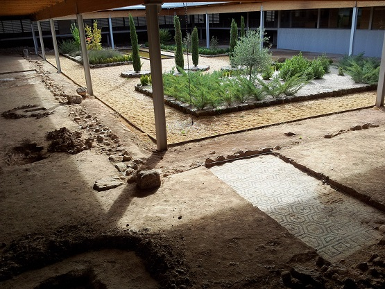

|
Villa romana de La Dehesa La villa romana de La Dehesa, se localiza en Las Cuevas de Soria. Museo de la Magna Mater. La presencia de imágenes de la diosa romana en los yacimientos de Los Villares, La Dehesa y Los Quintanares, han servido de hilo conductor para vincular a todas las villas romanas sorianas con la diosa y el concepto de naturaleza en el mundo romano. La villa está datada en la segunda mitad del siglo IV y construida a orillas del río Izana. Tiene una superficie construida de unos 1.400 m2, presenta planta rectangular y se organiza en torno a un amplio espacio central ajardinado; cuenta con un conjunto termal y más de treinta habitaciones de distintos tamaños con suelos de mosaico. La villa perteneció a una familia autóctona de nombre celtíbero: los Írrico, cuyo anagrama se puede ver en varias estancias y mosaicos de la villa.
 Fue descubierta y excavada en 1928
por Blas Taracena y José Tudela. Se excavó en su totalidad, sacando a la
luz lo que quedaba de la vivienda, los suelos y los arranques de las
paredes, y se protegió. Por los trabajos de Taracena y Tudela se
identificó como una villa habitada entre los siglos III-V y que
seguramente se abandonó de una manera controlada, no violenta, de ahí la
poca riqueza de materiales que se han encontrado, en contraste con la
suntuosidad reflejada por la estructura y por los mosaicos.
|